Azure Administrator认证学习 （2）
1.Microsoft Azure存储介绍
Azure 存储是微软提供的适用于互联网时代，现代数据存储场景的云存储解决方案。 Azure存储为数据对象提供可大规模缩放的对象存储，为云提供文件系统服务，并且提供用于可靠消息传送的消息传送存储以及 NoSQL 存储。Azure 存储主要有以下优势：
- 持久且具有高可用性。微软全球数据中心都是区域对存在的，冗余可确保数据在发生短暂的硬件故障时是安全的。还可以选择在各个数据中心或地理区域之间复制数据，从而在发生本地灾难或自然灾害时提供额外的保护。 以此方式复制的数据在发生意外中断时将保持高可用性。
- 安全。该服务将对写入到Azure存储的所有数据进行加密。Azure存储可以精细地控制谁可以访问你的数据。
- 可缩放。Azure存储设计为可大规模缩放以满足的当今互联网时代的应用程序在数据存储和性能方面的需求。
- 托管的。Microsoft Azure为你处理硬件维护、更新和关键问题。
- 易访问。可以通过HTTP或HTTPS从世界上的任何位置访问Azure存储中的数据
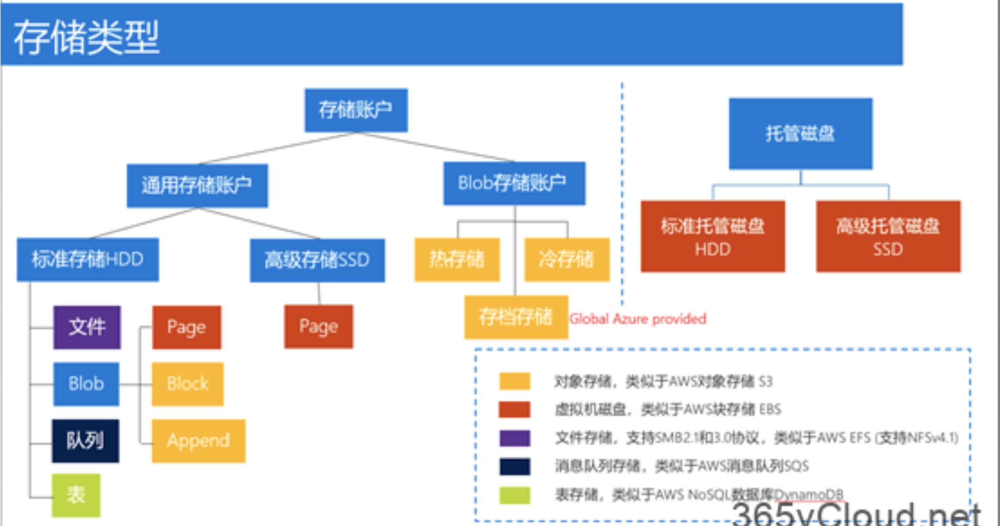
Microsoft Azure存储服务主要包括以下类型：
- Azure Blob：适用于文本和二进制数据的可大规模缩放的对象存储。
- Azure 文件：适用于云或本地部署的托管文件共享。
- Azure 队列：用于在应用程序组件之间进行可靠的消息传送的消息存储。
- Azure 表：一种 NoSQL 存储，适合用作结构化数据的无架构存储
1-1 Azure Blob
存储是Microsoft提供的适用于云的对象存储解决方案。Blob 存储最适合存储巨量的非结构化数据，例如文本或二进制数据。主要适用于：
- 直接向浏览器提供图像或文档。
- 存储文件以供分布式访问。
- 对视频和音频进行流式处理。
- 存储用于备份和还原、灾难恢复及存档的数据。
- 存储数据以供本地或 Azure 托管服务执行分析。
在日常使用中，可以通过HTTP或HTTPS从世界上的任何位置访问Blob存储中的对象。用户或客户端应用程序可以通过 URL、Azure存储REST API、Azure PowerShell、Azure CLI 或 Azure 存储客户端库访问 Blob。存储客户端库以多种语言提供，包括 .NET、Java、Node.js、Python、PHP和Ruby。
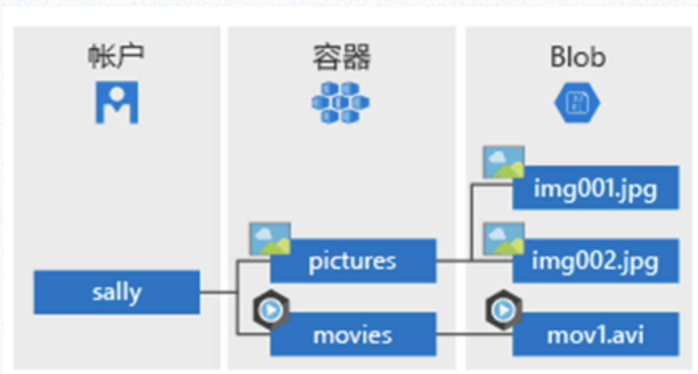
1-2 Azure 文件，
可以通过 Azure 文件设置可用性高的网络文件共享，以便使用标准的服务器消息块 (SMB) 协议对其进行访问。 这意味着，多个 VM可以共享启用了读取和写入访问权限的相同文件。 也可使用 REST 接口或存储客户端库来读取文件。
Azure 文件不同于公司文件共享的一点是，可以在全球任何地方使用 URL 来访问文件，只要该 URL 指向文件且包含共享访问签名 (SAS) 令牌即可。 可以生成 SAS令牌，用于在指定时间内对私有资产进行特定访问。其主要适用于：
- 许多本地应用程序使用文件共享。 此功能可以更方便地迁移那些将数据共享到 Azure 的应用程序。 如果将文件共享装载到本地应用程序所使用的驱动器号，则应用程序中访问文件共享的那部分应尽量少做更改（如果必须进行更改的话）。
- 配置文件可以在一个文件共享上存储，从多个 VM 进行访问。 可以将一个组中多个开发人员使用的工具和实用程序存储到文件共享中，确保每个人都能找到它们并使用同一版本。
- 例如，诊断日志、指标和故障转储是三种可以写入到文件共享中供以后处理或分析的数据。
需要注意的是，Azure File目前不支持基于Active Directory的身份验证和访问控制列表 (ACL)。这代表着，任何人只要装载了File共享都具有该共享的完整读/写访问权限。
1-3 Azure 队列服务
用于存储和检索消息。队列消息最大可以为 64 KB，一个队列可以包含数百万条消息。队列通常用于存储需要异步处理的消息的列表。
例如，假设你需要客户能够上传图片，并且你需要创建每个图片的缩略图。 可以让客户在上传图片时等待你创建缩略图，也可以使用队列。当客户完成上传操作后，向队列写入一条消息。然后通过Azure Function从队列检索该消息并创建缩略图。此处理过程的每一部分都可以单独进行缩放，让你可以根据使用情况进行调整，加强控制。
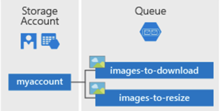
1-4 表存储
Azure 表存储是一项用于在云中存储结构化NoSQL数据的服务，通过无架构设计提供键/属性存储。因为表存储无架构，因此可以很容易地随着应用程序需求的发展使数据适应存储。对于许多类型的应用程序来说，访问表存储数据速度快且经济高效，在数据量相似的情况下，其成本通常比传统SQL要低。
可以使用表存储来存储灵活的数据集，例如 Web 应用程序的用户数据、通讯簿、设备信息，或者服务需要的其他类型的元数据。 可以在表中存储任意数量的实体，并且一个存储帐户可以包含任意数量的表，直至达到存储帐户的容量极限。
Azure表存储现在是Azure Cosmos DB的一部分。除了现有的Azure表存储服务，还有新的 Azure Cosmos DB 表 API 产品/服务，后者提供吞吐量优化表、全局分发和自动辅助索引。 若要详细了解和尝试新的高级体验，请查看Azure Cosmos DB 表 API。
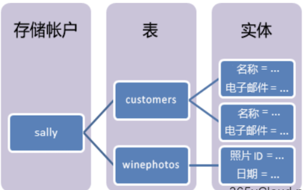
1-5 磁盘存储，即Azure 托管磁盘
也就是我们通常所说的虚拟硬盘 (VHD)。 可以将其视为本地服务器中的物理磁盘，但它是虚拟化的。Azure托管磁盘作为页 blob存储，后者是Azure中的随机IO存储对象。我们之所以将托管磁盘称为”托管”是因为，它是对页blob、blob容器和Azure存储帐户的抽象。对于托管磁盘，你所要做的就是预配磁盘，而Azure负责其余的工作。
在使用Azure存储之前，管理员需要先创建一个存储账户，并根据自己的情况，选择存储账户类型：
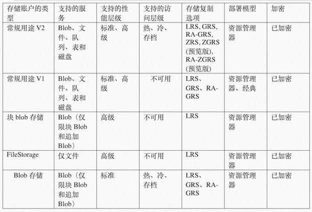
前面谈到了微软为了保证Azure存储中的数据高可靠性以及数据高持久性，设计了多个存储账户复制类型，以将数据复制到多个数据中心，实现数据多副本冗余。
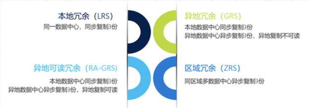
1-6 使用Azure PowerShell创建存储账户
#连接到Azure账户，并指定订阅
Connect-AzAccount -SubscriptionId <XXXXXX>
#使用 New-AzResourceGroup 命令创建资源组
$resourcegroup = “AZ103Exam”
$location = “westus”
New-AzResourceGroup -Name $resourceGroup -Location $location
#通过New-AzStorageAccount命令创建使用读取访问异地冗余存储(RA-GRS)的常规用途v2存储帐户
New-AzStorageAccount -ResourceGroupName $resourceGroup -Name az103examtest -Location $location -SkuName Standard_RAGRS -Kind StorageV2
使用Azure CLI创建存储账户
#Azure账户登录
az login
#使用 az group create 命令创建资源组
az group create –name az103examRG –location westus
#通过 az storage account create 命令创建使用读取访问异地冗余存储的常规用途 v2 存储帐户
az storage account create –name az103examtest101 –resource-group az103examRG –location westus –sku Standard_RAGRS –kind StorageV2
不管您使用哪种方式进行账户创建，您都需要确定你的存储数据复制类型，并且需要指定，以创建常规用途 v2 存储帐户为例
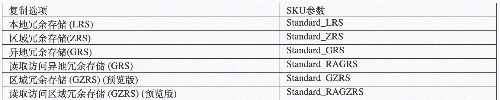
2、Azure中配置对存储帐户的网络访问
当创建了存储账户之后，默认情况下您就可以访问该数据。这个时候很多时候必然会存在一些安全隐患，尤其是和和业务系统集成的时候。
很多用户通常比较喜欢多层安全性来帮助保护公司的数据，因此我们就需要借助Azure存储的防火墙和虚拟网络（VNets）以及虚拟网络服务终结点功能，允许管理员创建仅允许来自选定VNet和子网的流量的网络规则，从而为其数据创建安全的网络边界。通过启用基于网络的访问控制，这些新的以网络为中心的功能允许客户定义基于网络访问的安全性，确保只允许来自特定批准的Azure VNets或指定的公共IP范围的请求进入特定的存储帐户。用户可以将现有授权机制与新网络边界相结合，以更好地保护其数据。
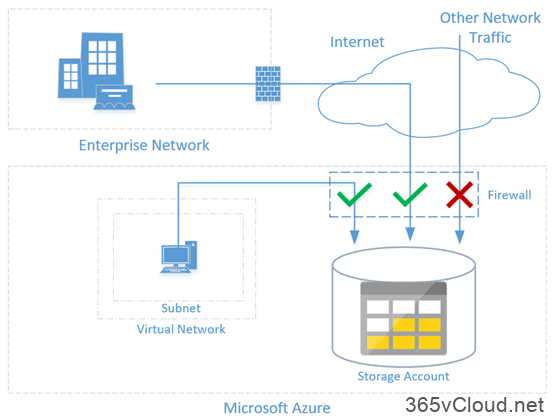
要启用VNet保护，请首先启用服务终结点以便VNet中进行存储。
虚拟网络服务终结点允许您将关键Azure服务资源保护到仅虚拟网络。在Internet流量通过虚拟设备或内部部署路由的情况下，服务终结点还为Azure主干上的Azure流量提供最佳路由。
#安装Azure PowerShell并进行登录Azure订阅
Login-AzAccount
#显示存储帐户默认规则的状态
(Get-AzStorageAccountNetworkRuleSet -ResourceGroupName “myresourcegroup” -AccountName “mystorageaccount”).DefaultAction
#将默认规则设置为默认拒绝网络访问
Update-AzStorageAccountNetworkRuleSet -ResourceGroupName “myresourcegroup” -Name “mystorageaccount” -DefaultAction Deny
#将默认规则设置为默认允许网络访问
Update-AzStorageAccountNetworkRuleSet -ResourceGroupName “myresourcegroup” -Name “mystorageaccount” -DefaultAction Allow
#列出虚拟网络规则
(Get-AzStorageAccountNetworkRuleSet -ResourceGroupName “myresourcegroup” -AccountName “mystorageaccount”).VirtualNetworkRules
#在现有虚拟网络和子网上启用 Azure 存储的服务终结点
Get-AzVirtualNetwork -ResourceGroupName “myresourcegroup” -Name “myvnet” | Set-AzVirtualNetworkSubnetConfig -Name “mysubnet” -AddressPrefix “0.0.0.0/24” -ServiceEndpoint “Microsoft.Storage” | Set-AzVirtualNetwork
#为虚拟网络和子网添加网络规则
$subnet = Get-AzVirtualNetwork -ResourceGroupName “myresourcegroup” -Name “myvnet” | Get-AzVirtualNetworkSubnetConfig -Name “mysubnet”
Add-AzStorageAccountNetworkRule -ResourceGroupName “myresourcegroup” -Name “mystorageaccount” -VirtualNetworkResourceId $subnet.Id
#列出 IP 网络规则
(Get-AzStorageAccountNetworkRuleSet -ResourceGroupName “myresourcegroup” -AccountName “mystorageaccount”).IPRules
#为单个 IP 地址添加网络规则
Add-AzStorageAccountNetworkRule -ResourceGroupName “myresourcegroup” -AccountName “mystorageaccount” -IPAddressOrRange “0.0.0.0”
#为 IP 地址范围添加网络规则
Add-AzStorageAccountNetworkRule -ResourceGroupName “myresourcegroup” -AccountName “mystorageaccount” -IPAddressOrRange “0.0.0.0/24”
如果您使用Azure CLI完成上述操作，请参考以下
#安装Azure CLI并进行登录Azure订阅
az login
#显示存储帐户默认规则的状态
(az storage account show –resource-group “myresourcegroup” –name “mystorageaccount” –query networkRuleSet.defaultAction
#将默认规则设置为默认拒绝网络访问
az storage account update –resource-group “myresourcegroup” –name “mystorageaccount” –default-action Deny
#将默认规则设置为默认允许网络访问
az storage account update –resource-group “myresourcegroup” –name “mystorageaccount” –default-action Allow
#列出虚拟网络规则
az storage account network-rule list –resource-group “myresourcegroup” –account-name “mystorageaccount” –query virtualNetworkRules
#在现有虚拟网络和子网上启用 Azure 存储的服务终结点
az network vnet subnet update –resource-group “myresourcegroup” –vnet-name “myvnet” –name “mysubnet” –service-endpoints “Microsoft.Storage”
#为虚拟网络和子网添加网络规则
$subnetid=(az network vnet subnet show –resource-group “myresourcegroup” –vnet-name “myvnet” –name “mysubnet” –query id –output tsv)
az storage account network-rule add –resource-group “myresourcegroup” –account-name “mystorageaccount” –subnet $subnetid
#列出 IP 网络规则
az storage account network-rule list –resource-group “myresourcegroup” –account-name “mystorageaccount” –query ipRules
#为单个 IP 地址添加网络规则
az storage account network-rule add –resource-group “myresourcegroup” –account-name “mystorageaccount” –ip-address “0.0.0.0”
#为 IP 地址范围添加网络规则
az storage account network-rule add –resource-group “myresourcegroup” –account-name “mystorageaccount” –ip-address “0.0.0.0/24”
3.共享访问签名 (SAS) 实现对 Azure 存储资源的控制访问
共享访问签名 (SAS) ，提供对存储帐户中的资源的安全委派访问权限, 而不会影响数据的安全性。
使用SAS, 可以精细地控制客户端访问数据的方式。
您可以控制客户端可以访问的资源、这些资源对这些资源拥有的权限, 以及SAS在其他参数中的有效时间。
- 现阶段，Microsoft Azure存储主要支持三种类型的共享访问签名：用户委托SAS (预览版)。用户委托SAS使用Azure Active Directory (Azure AD) 凭据以及为SAS指定的权限进行保护。用户委托SAS仅适用于Blob存储。 若要创建用户委托SAS, 必须首先请求用于对SAS进行签名的用户委托密钥.
- 服务SAS。使用存储帐户密钥保护服务SAS。服务SAS仅委托其中一个 Azure存储服务中的资源的访问权限:Blob存储、队列存储、表存储或Azure 文件。
- 帐户SAS。帐户 SAS使用存储帐户密钥进行保护。帐户 SAS可委派对一个或多个存储服务中的资源的访问权限。 通过服务或用户委托SAS提供的所有操作也可以通过帐户SAS 提供。此外, 使用帐户SAS, 你可以委派对服务级别应用的操作的访问权限, 例如获取/设置服务属性和获取服务统计操作。 还可以委派对blob容器、表、队列和文件共享执行读取、写入和删除操作的访问权限，而这是服务SAS所不允许的。
通过和微软Azure团队技术人员沟通了解到建议尽可能使用 Azure AD 身份验证机制作为最佳安全方案, 而不是使用帐户密钥。当应用程序设计要求使用共享访问签名来访问 Blob 存储时, 请使用 Azure AD 身份验证机制创建用户委托 SAS (如果可能) 以实现高级安全性。
- 临时SAS：当你创建一个即席SAS时, 该SAS的开始时间、到期时间和权限都在SAS URI中指定 (如果省略了开始时间, 则为默示的权限)。任何类型的 SAS 都可以是即席SAS。
- 具有存储访问策略的服务SAS: 存储访问策略在资源容器 (可以是blob容器、表、队列或文件共享) 上定义。存储访问策略可用于管理针对一个或多个服务共享访问签名的约束。将服务SAS与存储访问策略相关联时, 该SAS将继承—为存储访问策略定义的开始时间、到期时间和权限。
SAS令牌是在客户端生成的字符串, 例如, 使用Azure存储客户端库之一。 Azure存储不会以任何方式跟踪SAS令牌。可在客户端侧创建无限数量的 SAS 令牌。创建SAS后, 可以将其分发到需要访问存储帐户中的资源的客户端应用程序。
当客户端应用程序将SAS URI 作为请求的一部分提供给Azure存储时, 服务将检查SAS参数和签名, 以验证它是否对授权请求有效。 如果服务验证签名有效，则对请求进行授权。否则，将拒绝请求，错误代码为403（已禁止）。如下图所示：
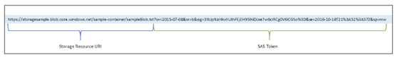
SAS通常适用于用户需要在存储帐户中读取和写入其数据的服务情形。在存储帐户存储用户数据的情形中，有两种典型的设计模式：
客户端通过执行身份验证的前端代理服务上传和下载数据。此前端代理服务的优势在于允许验证业务规则，但对于大量数据或大量事务，创建可扩展以匹配需求的服务可能成本高昂或十分困难。
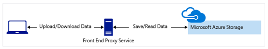
轻型服务按需对客户端进行身份验证，并生成SAS。当客户端应用程序收到 SAS后, 它们可以直接使用 SAS定义的权限和 SAS允许的间隔访问存储帐户资源。SAS减少了通过前端代理服务路由所有数据的需要。
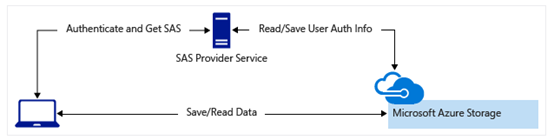
在某些情况下, 需要使用SAS在复制操作中对源对象的访问权限:
- 将一个Blob复制到存储在不同存储帐户中的另一个Blob时，必须使用SAS 授予对源Blob的访问权限。还可以选择使用SAS授予对目标blob的访问权限。
- 将一个文件复制到驻留在不同存储帐户中的另一个文件时，必须使用SAS 授予对源文件的访问权限。还可以选择使用SAS授予对目标文件的访问权限。
- 将一个Blob复制到一个文件，或将一个文件复制到一个Blob时，必须使用SAS授予对源对象的访问权限，即使源对象和目标对象驻留在同一存储帐户中也是如此。
使用有效账户登录Azure订阅之后，选择资源组，以及存储账户名称，在左边侧边栏中选择”共享访问签名”，我们可以根据(即Blob、文件、队列、表存储服务)设计不同的权限，开始以及结束时间，允许的IP地址或者范围，包括协议。
以下为一个使用Azure PowerShell为容器或 blob 创建用户委托 SAS的示例文件。
#连接到Azure账户，并指定订阅
Connect-AzAccount -SubscriptionId <xxxxxxx>
#通过 RBAC 分配权限
New-AzRoleAssignment -SignInName <email> -RoleDefinitionName “Storage Blob Data Contributor” -Scope “/subscriptions/<subscription>/resourceGroups/<resource-group>/providers/Microsoft.Storage/storageAccounts/<storage-account>”
#使用 Azure AD 凭据来保护 SAS
$ctx = New-AzStorageContext -StorageAccountName <storage-account> -UseConnectedAccount
#为容器创建用户委托 SAS
New-AzStorageContainerSASToken -Context $ctx -Name <container> -Permission racwdl -ExpiryTime <date-time>
#为 blob 创建用户委托 SAS
New-AzStorageBlobSASToken -Context $ctx -Container <container> -Blob <blob> -Permission racwd -ExpiryTime <date-time> -FullUri
4.Azure存储分析
企业将业务系统部署在云端，可以是IaaS，可以是PaaS服务。业务系统可以使用多种存储技术（如Microsoft Azure 存储表、Blob、队列或文件）以及其他数据存储（如关系数据库和文档数据库）。
若要成功管理此类应用程序，企业管理员应主动监视这些应用程序，并了解如何诊断和排查这些应用程序及其相关技术的所有方面的问题。
作为Azure存储服务的用户，应持续监视应用程序所用的存储服务是否出现任何意外的行为更改（如比正常响应时间慢），并使用日志记录收集更详细的数据并深入分析问题。 从监视和日志记录获取的诊断信息将有助于确定应用程序所遇到问题的根本原因。然后，用户可以排查该问题，并确定可以执行以更正该问题的相应步骤。 Azure存储是一项核心Azure服务，它是客户部署到Azure基础结构的大多数解决方案的重要组成部分。Azure存储提供的功能可以简化监视、诊断和排查基于云的应用程序中的存储问题的过程。
因此我们需要利用Azure Monitor服务对存储服务开启监视功能并对其分析。
5.存储复制
-
本地冗余存储（LRS），
LRS是成本最低的复制选项，与其他选项相比，耐用性最低。如果发生数据中心级灾难（例如，火灾或洪水），则所有副本可能会丢失或无法恢复。为了降低此风险，Microsoft建议使用区域冗余存储（ZRS），地理冗余存储（GRS）或地理区域冗余存储（GZRS）。Azure高级存储仅支持本地冗余存储（LRS）。 -
区域冗余存储（
ZRS），用于构建高可用性Azure存储应用程序，区域冗余存储（ZRS）在一个区域内跨三个存储群集同步复制数据。每个存储群集在物理上与其他群集分离，并位于其自己的可用区域（AZ）中。每个可用区域及其中的ZRS集群都是自治的，包括单独的实用程序和网络功能。只有在将数据写入三个集群中的所有副本之后，对ZRS存储帐户的写入请求才会成功返回。ZRS帐户目前不支持存储归档和托管磁盘。 -
地理冗余存储（GRS），提供跨Azure区域数据复制服务，对于启用了GRS或RA-GRS的存储帐户，首先使用本地冗余存储（LRS）复制所有数据。首先将更新提交到主要位置并使用LRS进行复制。然后使用GRS将更新异步复制到辅助区域。当数据写入辅助位置时，它也会使用LRS在该位置内复制。默认情况下，使用GRS服务的数据副本不可用于读取或写入访问。如果希望对数据进行读取或者写入操作，则建议使用RA-GRS或RA-GZRS（预览）
-
地理区域冗余存储（GZRS），地理区域冗余存储（GZRS）（预览）将区域冗余存储（ZRS）的高可用性与地理冗余存储（GRS）提供的区域中断保护相结合。
GZRS存储帐户中的数据将复制到主要区域中的三个Azure可用区域，并复制到辅助地理区域以防止区域性灾难。每个Azure区域与同一地理区域内的另一个区域配对，共同构成区域对。使用GZRS存储帐户，如果可用区域不可用或不可恢复，您可以继续读取和写入数据。此外，在完全区域中断或主要区域无法恢复的灾难的情况下，您的数据也是持久的。只有通用v2存储帐户才支持GZRS和RA-GZRS。目前该服务处于预览阶段，仅限在美国东部提供服务。
使用以下PowerShell命令实现复制服务升级到GRS
Set-AzStorageAccount -ResourceGroupName “MyResourceGroup” -AccountName “mystorageaccount” -Type “Standard_GRS”
最后，由于Azure不同服务定价也是不一样的，如果您从默认的LRS升级到其他，那么相对应的也会产生其他费用。这个需要着重注意
例如,LRS转到任何其他类型的复制将产生额外的费用, 因为你要迁移到更复杂的冗余级别。 迁移到GRS 或 GRS 将导致出口带宽费用, 因为你的数据 (在你的主要区域) 正在复制到远程次要区域。 此费用是在初始设置时收取的一项费用。 复制数据后, 不会产生进一步的迁移费用。 只需为复制现有数据的新数据或更新付费。
如果将存储帐户从GRS迁移到LRS, 则不会产生额外的费用, 但会从辅助位置删除已复制的数据。
6.导入和导出服务介绍
Azure导入/导出（Import/Export）服务是一项Azure离线数据传输服务，使用 Azure 导入/导出服务，可将磁盘寄送到 Azure 数据中心，从而安全地将大量数据导出到 Azure Blob 存储和 Azure 文件。
此外，还可以使用此服务将数据从Azure Blob存储传输到磁盘，然后再寄送到本地站点。可将单个或多个磁盘中的数据导入到 Azure Blob 存储或 Azure 文件。
当然，这个过程需要您自己提供磁盘以存储数据，如果希望由微软提供，可以使用 Azure Data Box 磁盘将数据导入 Azure。
Microsoft 通过区域运营商向你的数据中心发运每个订单最多 5 个加密固态磁盘驱动器 (SSD)，总容量为 40 TB。 你可以快速配置磁盘驱动器，通过 USB 3.0 连接将数据复制到磁盘驱动器，然后将磁盘驱动器发运回 Azure。
使用该服务主要有以下几个场景：
- 将数据迁移到云：将大量数据经济高效地快速迁移到 Azure。
- 内容分发：将数据快速发送到客户站点。
- 备份：将本地数据备份后存储在 Azure 存储中。
- 数据恢复：恢复存储在存储中的大量数据，然后将其递送到本地位置。
Azure”导入/导出”服务通过创建作业（Job），将数据传输到Azure Blob和 Azure 文件。 使用Azure 门户或Azure资源管理器REST API创建作业。每个作业都与单个存储帐户相关联。
作业可以为导入或导出作业。导入作业可将数据导入到Azure Blob或Azure 文件，导出作业可从Azure Blob导出数据。对于导入作业，需要寄送包含数据的驱动器。创建导出作业时，需要将空驱动器寄送到Azure数据中心。每种情况下，每个作业最多可以寄送10个磁盘驱动器。
7.Azure Data Box
Azure Data Box是微软新推出的一种数据导入导出服务，可以通过快速、经济、可靠的方式将TB量级的数据发送到Azure。通过向你发送专有的Data Box存储设备来加速安全数据传输。每个存储设备的最大可用存储容量为80 TB，并通过区域运营商传送到数据中心。该设备具有坚固的外壳，可在运输过程中保护数据。
可通过Azure门户订购Data Box设备。收到设备后，可使用本地Web UI 进行快速设置。将数据从服务器复制到设备，然后将设备发回Azure。在Azure 数据中心内，数据将从设备自动上传到Azure。 通过Azure门户中的Data Box 服务对整个过程进行端到端跟踪。
Data Box非常适合在在无网络连接到有限网络连接的情况下传输大于 40 TB 的数据。数据移动的方式可以是一次性的、定期的，或者先执行批量数据传输，再定期传输。以下是 Data Box 可用于数据传输的各种方案。
一次性迁移 – 需要将大量本地数据移到 Azure 时。
- 将媒体库从脱机磁带移动到 Azure 以创建联机媒体库。
- 将 VM 场、SQL server 和应用程序迁移到 Azure
- 将历史数据移至 Azure，以便使用 HDInsight 进行深入分析和报告
初始批量传输 – 需要先使用 Data Box（种子）执行初始批量传输，然后通过网络执行增量传输时。
使用Azure Data Box主要有以下几个优点：
- 速度 –
Data Box使用 1 Gbps 或 10 Gbps 网络接口将多达 80 TB 的数据移至 Azure。 - 安全 –
Data Box为设备、数据和服务提供内置安全保护。
8.Azure File Share服务
Azure File，一种在云端提供完全托管的文件共享服务，这些共享可通过行业标准的服务器消息块 (SMB) 协议进行访问。
Azure File共享可由云或者 Windows、Linux 和MacOS的本地部署同时装载。此外，可以使用Azure File Sync服务将Azure File共享缓存在Windows Server上，以加快访问速度（与在数据使用位置进行访问的速度相当）。
由于 Azure File是完全托管的，因此在企业生产环境中对其进行部署比部署和管理文件服务器或 NAS 设备简单得多。
其在Azure平台中以以下架构的形式存在：
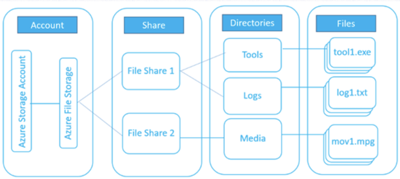
- 存储帐户：对 Azure 存储进行的所有访问都要通过存储帐户完成。
- 共享：文件存储共享是Azure 中SMB文件共享。所有目录和文件都必须在父共享中创建。 一个帐户可以包含无限数量的共享，一个共享可以存储无限数量的文件，直到达到文件共享的总容量。对于标准文件共享，总容量最多为 5 TiB （GA）或 100 TiB （预览版），适用于高级文件共享，总容量为100 TiB。
- 目录：可选的目录层次结构。
- 文件：共享中的文件。文件大小最大可以为1 TiB。
- URL 格式：对于使用文件REST协议向Azure文件共享提出的请求，可采用以下 URL格式对文件进行寻址：
https://<storage account>.file.core.windows.net/<share>/<directory>/<file>
8-1 Azure File主要有以下使用场景：
- 取代或扩展本地文件服务器：可以使用Azure文件来完全取代或补充传统的本地文件服务器或NAS设备。流行的操作系统（例如 Windows、macOS 和 Linux）可在世界各地直接装载Azure文件共享。 此外，可以使用Azure File Sync将Azure文件共享复制到本地或云中的Windows Server，以便在使用位置对数据进行高性能的分布式缓存。
- “直接迁移”应用程序：借助Azure文件可以轻松地将预期使用文件共享存储文件应用程序或用户数据的应用程序”直接迁移”到云中。Azure文件既支持”经典”直接迁移方案（应用程序及其数据将移到 Azure 中），也支持”混合”直接迁移方案（应用程序数据将移到Azure文件中，应用程序继续在本地运行）。
- 简化云开发：还可以通过众多方式使用
Azure文件来简化新的云开发项目。 例如：- 共享应用程序设置：分布式应用程序的常见模式是将配置文件置于某个中心位置，然后可以从许多应用程序实例访问这些文件。应用程序实例可以通过文件
REST API加载其配置，人类可以根据需要通过本地装载 SMB 共享来访问这些配置。 - 诊断共享：Azure文件共享是云应用程序写入其日志、指标和故障转储的方便位置。应用程序实例可以通过文件REST API写入日志，开发人员可以通过在其本地计算机上装载文件共享来访问这些日志。 这就带来了极大的灵活性，因为开发人员可以利用云开发，同时又不需要放弃他们所熟悉和喜爱的任何现有工具。
- 开发/测试/调试：开发人员或管理员在云中的VM上工作时，通常需要一套工具或实用程序。将此类实用程序和工具复制到每个VM可能非常耗时。 通过在VM上本地装载Azure文件共享，开发人员和管理员可以快速访问其工具和实用程序，而无需进行复制。
- 共享应用程序设置：分布式应用程序的常见模式是将配置文件置于某个中心位置，然后可以从许多应用程序实例访问这些文件。应用程序实例可以通过文件
Azure File服务支持直接云访问和Azure 文件同步两种方式进行数据访问
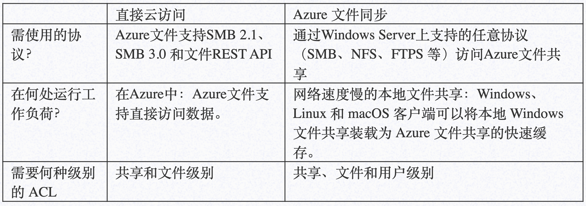
Azure File服务部署在企业生产中能够极大便利用户和业务系统数据存储与访问，具有如下优势：
- 共享访问。Azure文件共享支持行业标准SMB协议，也意味着你可以无缝地将本地文件共享替换为Azure文件共享，不需担心应用程序兼容性。 对于需要可共享性的应用程序来说，能够跨多个计算机、应用程序/实例共享文件系统是使用Azure文件的一项明显优势。
- 完全托管。不需管理硬件或OS即可创建Azure文件共享。也意味着你不需使用关键的安全升级程序来修补服务OS，也不需更换故障硬盘。
- 脚本和工具。在管理Azure应用程序的过程中，可以使用PowerShell cmdlet 和Azure CLI来创建、装载和管理Azure文件共享。可以使用Azure门户和 Azure 存储资源管理器来创建和管理Azure文件共享。
- 复原能力。Azure文件是从头开始构建的，我们的目的是确保其始终可用。 将本地文件共享取代为Azure文件之后，再也不需要半夜起来处理当地断电或网络问题。
- 熟悉的可编程性。在Azure 中运行的应用程序可以通过文件系统
I/O API访问共享中的数据。因此，开发人员可以利用其现有代码和技术迁移现有应用程序。除了系统IO API，还可以使用Azure存储客户端库或Azure存储 REST API。
Azure 文件提供两个性能层级满足不同用户不同场景的需求: 标准和高级：
- 标准文件共享支持机械硬盘(HDD)。标准文件共享为IO工作负荷提供可靠的性能, 这些工作负荷对性能变化 (如一般用途文件共享和开发/测试环境) 不敏感。
- 标准文件共享只能在即用即付计费模型下使用。标准文件共享最多可提供
5TiB。 - Azure 文件标准共享支持四种数据冗余选项：本地冗余存储（LRS）、区域冗余存储（ZRS）、异地冗余存储（GRS）和异地冗余存储（GZRS）（预览版）。
- 标准文件共享只能在即用即付计费模型下使用。标准文件共享最多可提供
- 高级文件共享由固态硬盘 (SSD) 支持。对于IO 密集型工作负荷, 高级文件共享为大多数IO操作提供持续的高性能和低延迟。这使得它们适用于各种工作负荷, 如数据库、网站托管和开发环境。
- 高级文件共享只能在预配的计费模型下使用。
- 高级文件共享使用与标准文件共享分离的部署模型。Azure 文件 premium 共享支持 LRS 和 ZRS，ZRS 目前在一小部分区域中提供。
现阶段, 不能在标准文件共享和高级文件共享之间直接转换。 如果要切换到任一层, 必须在该层中创建新的文件共享, 并手动将数据从原始共享复制到所创建的新共享。可以使用支持的任何Azure文件复制工具 (例如Robocopy或 AzCopy) 来执行此操作。
Azure File与Azure Blob主要有如下区别
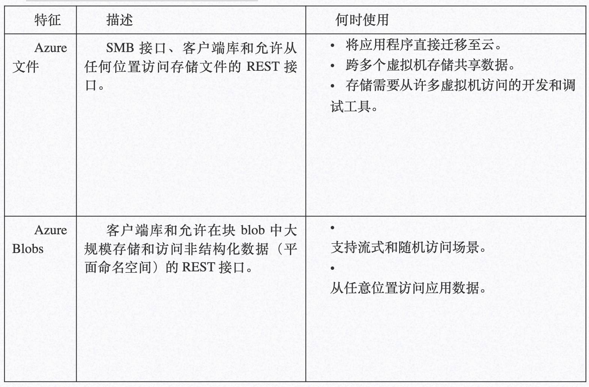
企业管理员可以使用Azure门户、Azure CLI、Azure PowerShell以及Azure存储资源管理器等方式创建与管理Azure File服务。
在使用 Azure 文件共享之前，必须创建Azure存储帐户。可以使用常规用途v2存储帐户访问所有Azure存储服务：Blob、文件、队列、表。
本快速入门创建常规用途v2存储帐户，但创建任何类型的存储帐户的步骤都相似。一个存储帐户可以包含无数个共享。一个共享可以存储无数个文件，直至达到存储帐户的容量限制为止。
9.Azure File同步服务
Microsoft Azure提供了一个称为Azure File Sync的产品，该产品允许将本地文件服务器与存储帐户支持的Azure文件进行同步。
即可将组织的文件共享集中在Azure文件中，同时又不失本地文件服务器的灵活性、性能和兼容性。
Azure文件同步可将 Windows Server 转换为Azure文件共享的快速缓存。 可以使用Windows Server上可用的任意协议本地访问数据，包括SMB、NFS和FTPS。并且可以根据需要在世界各地具有多个缓存。
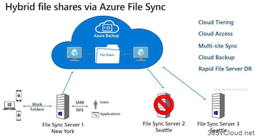
10.Azure File同步组和云终结点
同步组，同步组定义一组文件的同步拓扑。
同步组中的终结点保持彼此同步。同步组中必须包含一个表示Azure文件共享的云终结点，以及一个或多个服务器终结点。服务器终结点表示已注册服务器上的路径。服务器可以包含多个同步组中的服务器终结点。可以创建任意数量的同步组，以适当地描述所需的同步拓扑。
云终结点是指向 Azure 文件共享的指针。
所有服务器终结点将与某个云终结点同步，使该云终结点成为中心。Azure 文件共享的存储帐户必须位于存储同步服务所在的同一个区域。将同步整个 Azure 文件共享，但有一个例外：将预配一个特殊的文件夹，它相当于 NTFS 卷上的”System Volume Information”隐藏文件夹。此目录名为”.SystemShareInformation”。 其中包含不会同步到其他终结点的重要同步元数据。请不要使用或删除它！